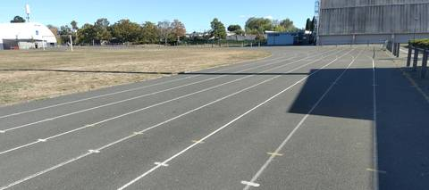
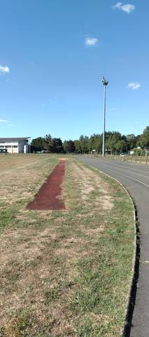
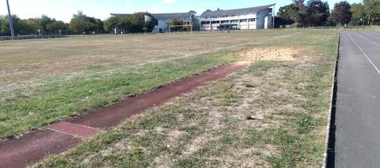
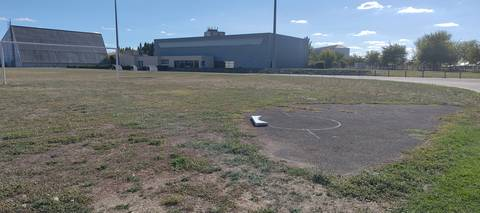

{kind=link}
{kind=link}
{kind=link}
{kind=link}
Belle surprise : c'est un grand complexe, avec de quoi faire de belles choses malgré un anneau en bitume. Attention cependant, la piste est plus courte qu'il n'y paraît — ma montre GPS a mesuré 280 m au lieu des 400 m annoncés. Le sautoir en longueur/triple saut, en tartan, est plutôt pas mal pour des sauteurs en longueur.
Parc des Sports de la Goducière
100 avenue de la république, 49800 Trélazé · Maine-et-Loire
Parc des Sports de la Goducière is an athletics venue in Trélazé (Maine-et-Loire), Pays de la Loire, France. It has a 280 m asphalt / tarmac running track with 7 lanes. It also offers long jump pit, triple jump and shot put. The venue provides floodlighting, changing rooms and showers. Access is free and unrestricted.
Photos




A photo is surely still missing
Jump pits and throwing areas are what public data describes worst, and what gets photographed least. A close-up of the ground, a covered vault pit, a sand box gone to weeds: each adds what no field carries.
Send a photoNo GitHub account?Track
- Surface
- Asphalt / tarmac
- Lap length
- 280 m
- Track type
- Athletics stadium oval
- Lanes
- 7
- Setting
- Outdoor
- Opened
- 1980
- Last refurbished
- 2011
Recorded facilities
- Long jump pit
- Triple jump
- Shot put
Access & amenities
- Free access
- Yes
- Floodlighting
- Yes
- Changing rooms
- Yes
- Showers
- Yes
- Toilets
- Yes
- Stand
- 80 seats
Athlete reviews
Visite du 12 septembre 2026. L'anneau est en bitume, pas en tartan. Le sautoir en longueur/triple saut, lui, est revêtu de tartan et exploitable, de même que l'aire de lancer du poids (cercle bétonné). Aucun autre agrès n'a été vu — pas de hauteur, de perche, de cage pour les lancers lourds, de javelot ni de rivière de steeple constatés, ce qui ne veut pas dire qu'ils sont absents. Le développement déclaré par le recensement est de 400 m. La mesure à la montre GPS, le 12 septembre 2026, donne 280 m — c'est cette valeur mesurée qui est retenue ici. Les montres GPS ont tendance à couper les virages et à sous-estimer le développement réel d'un anneau : la vraie longueur est probablement un peu supérieure, sans doute plus proche de 300 m, mais ce n'est qu'une hypothèse et non une mesure, donc elle n'est pas inscrite en dur. Accès libre constaté : entrée possible sans contrôle particulier. Les 7 couloirs restent ceux déduits du tracé de l'anneau dans OpenStreetMap (r3215778), non comptés sur place.
Other venues in the department
- Collège Félix Landreau
- Complexe sportif de Villoutreys
- Complexe sportif François Bernard
- Collège La Madeleine
- Stade de l'Arceau / Château de l'Arceau
- Complexe Sportif de la Venaiserie
Official website of the venue · Report an error or complete this record
Réf. I493530008 · Source: Data ES + community — Data ES, French ministry for sport, Licence Ouverte 2.0. Records are self-declared and may be incomplete: check access conditions before travelling.